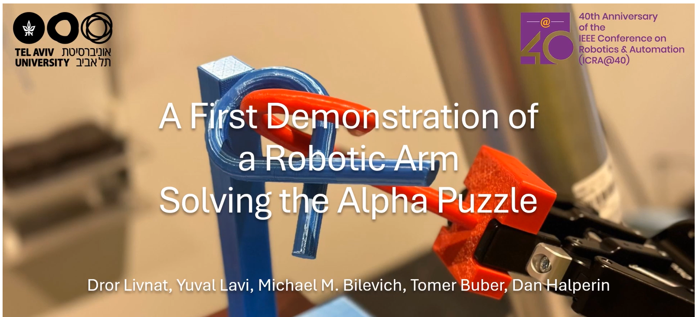

Robotic Arm Solving the Alpha Puzzle
Watch the UR5 robotic arm solve the Alpha Puzzle using advanced algorithms.
 Read More about the Alpha Puzzle SolutionIndoor Localization of UAVs Using Few Measurements
Accepted to ICRA (acceptance rate: 38.67%)
This work presents a novel output-sensitive method for UAV localization using minimal data.
 View Project Page
View Project Page
UAV Localization with a Low-Cost ToF Sensor
Read our latest research on UAV localization:
 Demonstrating Effective Indoor UAV Localization with a Low-Cost ToF Sensor
Demonstrating Effective Indoor UAV Localization with a Low-Cost ToF Sensor